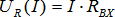
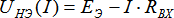

1. Расчёт нелинейных цепей методом эквивалентного источника
Для расчета электрических цепей любой сложности, содержащих только один нелинейный элемент, может быть применен метод эквивалентного генератора.
Относительно нелинейного элемента всю остальную часть схемы можно заменить эквивалентным генератором напряжения, ЭДС которого равна напряжению на разомкнутых зажимах ветви с нелинейным элементом, а его внутреннее сопротивление равно входному сопротивлению пассивного линейного двухполюсника относительно разомкнутой ветви с нелинейным элементом.
Так как определение напряжения холостого хода и входного сопротивления проводится при исключенном из рассмотрения нелинейном элементе, то эти этапы расчета являются чисто линейными задачами. Таким образом, сложная схема сводится к схеме, представленной на рис. 1.1. Определение же тока в нелинейном элементе и напряжения на нем проводится графическим методом.
Запишем для схемы (рис. 1.1) уравнение по второму закону Кирхгофа:  .
.
Ток в схеме (и напряжение на нелинейном элементе) можно определить по найденному значению ЭДС, построив линейную зависимость  и сложив две вольт-амперные характеристики и (рис. 1.2).

Однако расчет можно упростить, если исходное уравнение привести к виду: .
В этом случае решение задачи, то есть определение тока и напряжения на нелинейном элементе, - это точка пересечения вольт-амперной характеристики (ВАХ) нелинейного элемента (НЭ) и линейной вольт-амперной характеристики эквивалентного генератора  , которую легко построить по любым двум точкам (рис. 1.3).
, которую легко построить по любым двум точкам (рис. 1.3).

Пример 1.1
Определить токи и напряжение на нелинейном элементе в схеме (рис. 1.4), если дано:
 |
|
| Рис. 1.4 | Рис. 1.5 |
Так как в схеме только один нелинейный элемент, то расчет проведем методом эквивалентного генератора напряжения.
1. Размыкаем ветвь с нелинейным элементом (рис. 1.6). В этом случае полученная схема является линейной и к ней применимы все методы расчета линейных цепей.
Полученную схему рассчитываем методом контурных токов, после чего определяем напряжение холостого хода  .
.

2. Исключаем из схемы (рис. 1.4) все источники и определяем входное сопротивление полученного пассивного двухполюсника со стороны разомкнутых зажимов (рис. 1.7):


3. Следовательно, исходная схема (рис. 1.4) сводится к схеме (рис. 1.8).
Построив характеристику  , найдем в точке ее пересечения с ВАХ НЭ значения тока в нелинейном элементе и напряжения на нем:
, найдем в точке ее пересечения с ВАХ НЭ значения тока в нелинейном элементе и напряжения на нем:  (рис. 1.5).
(рис. 1.5).
Остальные токи в схеме определяем, пользуясь законами Кирхгофа:
Проверка: например, для контура 1-2-3 по закону Кирхгофа.
Пример 1.2
Определить токи и напряжение на нелинейном элементе в схеме (рис. 1.9), если дано:

 |
|
| Рис. 1.9 | Рис. 1.10 |
1. Размыкаем ветвь с нелинейным элементом (рис. 1.11) и находим напряжение холостого хода, предварительно определив токи в ветвях.


2. Исключаем из схемы (рис. 1.9) все источники и определяем входное сопротивление полученного пассивного двухполюсника со стороны разомкнутых зажимов (рис. 1.12):

3. Следовательно, исходная схема (рис. 1.9) сводится к схеме (рис. 1.1).
Построив характеристику , найдем в точке ее пересечения с ВАХ НЭ значения тока в нелинейном элементе и напряжения на нем:  (рис. 1.10).
(рис. 1.10).
4. Остальные токи в схеме определяем, пользуясь законами Кирхгофа: